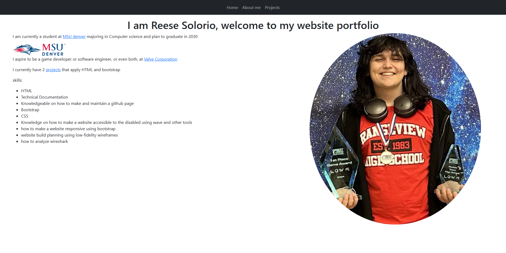
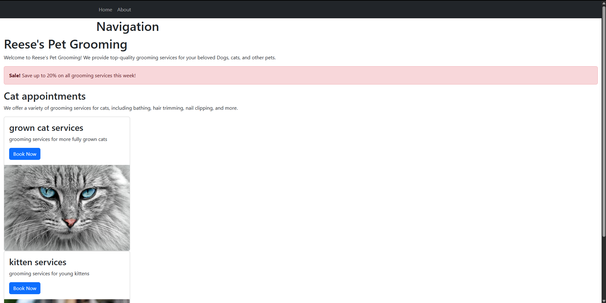

This very website is a project that is 100% done by myself, with guidence from my Professor of course. It is built with HTML and Bootstrap. when first starting this project, I had to plan out the website using low-fidelity wireframing, where I shaped the layout of the website and where I wanted to place the content. After that, I started to build the website using HTML and Bootstrap. I also made sure that the website is accessible to the disabled using the WAVE extention and outside input. Finally, I made sure that the website is responsive using Bootstrap, adding onto the accessibility of the website.
the website was saved and maintained using Git and GitHub by committing changes regularly and pushing them to the remote repository.
Any new information that I learned throughout the development I put into my technical document, for easy access later. Rather than searching for information online and in class slides over and over again.
skills demonstrated:

This project involved practicing HTML and Bootstrap by implementing with the many elements to build a simple website. I made my to resemble a pet grooming service. The main idea for this project was to build our technical document, learn web accessibility, responsiveness, and how to commit and push with git and GitHub.
skills demonstrated: